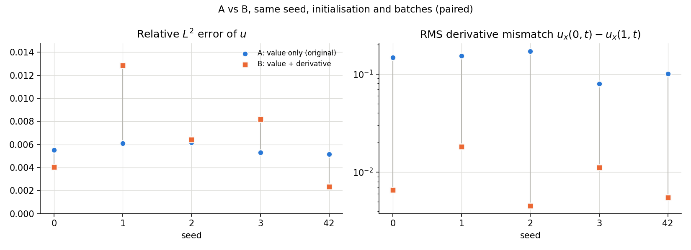
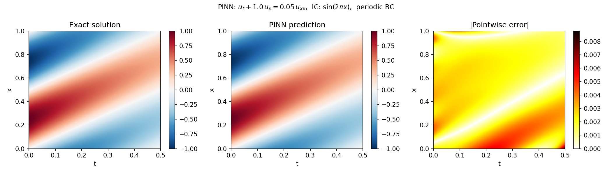

Scientific ML · Numerical PDEs
My contribution
I implemented a PINN and ran a paired five-seed study of value-only versus value-and-derivative periodic boundary losses on CPU, then repeated it on a Tesla T4 with a documented reproducibility check.
Verified resultsResearch implementation · CPU and Tesla T4 runs agree within seed variation
Derivative mismatch fell 7 to 38× per seed on CPU and 16× in the mean on a Tesla T4 rerun; global solution accuracy did not improve reliably and the PDE residual rose.
Problem
Approximating the solution of a linear PDE (1D advection-diffusion) with a neural network trained without any labelled interior data, and testing whether enforcing the periodic boundary condition more completely improves the solution.
Approach
A PyTorch PINN enforces the PDE residual, the initial condition and periodic boundary conditions via automatic differentiation, trained on resampled collocation points with Adam. Two formulations are compared, paired on seed, initialisation and batches: A penalises value periodicity only; B adds derivative periodicity, which the second-order problem requires. Nothing else changes, and loss weights are not tuned.
Result
In the primary five-seed comparison at 15,000 iterations on CPU, formulation B reduced the boundary derivative mismatch in every seed. This is a reduction in boundary mismatch, not in solution error: the relative L² error was 5.64 × 10⁻³ ± 0.46 × 10⁻³ for A and 6.76 × 10⁻³ ± 4.07 × 10⁻³ for B, lower for two seeds and higher for three, and B's PDE residual was 2.7 times higher. Enforcing one physical constraint more strictly did not by itself improve global accuracy; it exposed an unresolved optimisation and loss-balancing trade-off.


Tesla T4 validation
The same ten runs were repeated on a Tesla T4 with the configuration unchanged. The conclusions reproduce: the mean derivative mismatch is 16 times lower for B, B's PDE residual is 2.6 times that of A, and B's relative L² error is lower for three seeds and higher for two, with about nine times the spread. For every metric, the mean paired difference between the devices is smaller than its standard deviation over seeds. The CUDA results are not more accurate than the CPU results; the reported values remain the CPU ones.
Timing was compared only within one session: for formulation A, seed 42, the T4 was about 1.9 to 2.0 times faster than the 2-thread CPU of the same Kaggle session, in two sessions. This is not a general speed-up, and no comparison with other machines is made.
A reproducibility check found that CUDA trainings at the start of a fresh process did not always reproduce, while later trainings in the same process reproduced earlier checkpoints bit for bit; reordering the seeds showed the variation followed run position, not seed. The CPU reference run of those sessions gave the same value both times, to the ten digits printed. No underlying cause has been established.
Limitations
One smooth, low-frequency test problem; one network size; loss weights were not tuned; five seeds. The primary comparison uses one training budget. A 30,000-iteration rerun, decided after the primary result was seen, suggests B benefits from more optimisation, but it is a diagnostic and not the reported result. The T4 evidence is one GPU model, one PyTorch version and one platform.

